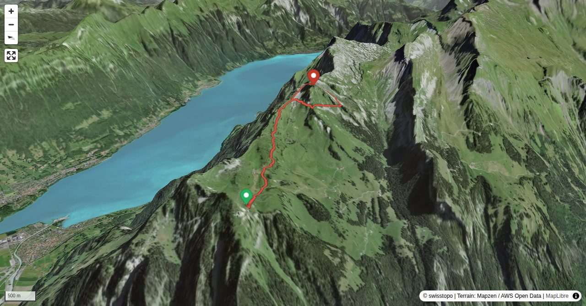

Obwohl nahe der gut erschlossenen Schynigen Platte, führt zum Glück noch kein markierter Weg auf das Loucherhorn. Zu steil sind wohl seine Grate und Flanken. So sieht es mit seinen Felswänden und Grasrinnen denn auch auf allen Seiten ziemlich abweisend aus. Locker ist eine Besteigung tatsächlich auf keiner Route. Für Alpinwanderer ist es jedoch ein lohnendes Ziel und wird hin und wieder besucht. Trotzdem gibt es noch Neuland am Loucherhorn. Die kaum bekannte Route durch die Ostflanke ermöglicht zusammen mit den bekannten und leichteren Linien interessante Überschreitungen.
Postautohaltestelle, Ausgangspunkt für Variante 2: Aufstieg von Bönigen.
Quick Facts
| Summit elevation | 2211 m |
|---|---|
| Difficulty | SAC T5+ Check the route notes below for terrain and commitment level. Guide |
| Trailhead | Schynige Platte |
| Distance | 4.4 km (out-and-back) |
| Total ascent | ~332 m |
| Elevation range | 1910-2211 m |
| Route sources | SAC Route Portal |
Photos


Planning
i
i
sac_scale (precise T1–T6) with
swissTLM3D Wanderwegart
fallback where OSM is silent (coarser T2/T3 and T4+ buckets).
Coverage: OSM 84.9% · swisstopo 3.7% · unknown 9.7%.Elevations computed from the inlined GPX track (SwissTopo height API).
Loading forecast…
Start: Schynige Platte (1970 m)
Route returns to Schynige Platte.
3D Terrain View

Route Details
Ostflanke
Terrain & safety
Die schwierigen Stellen sind kurz, aber anspruchsvoll. Zwei kaminartige Rinnen in der Ostflanke sind von Weitem kaum zu sehen. In der ersten gibt es Kletterstellen bis II, die zweite Rinne ist leichter zu ersteigen (I). Der Ausstieg erfolgt kurz vor dem Gipfel auf den Nordgrat. Auf diesem nochmals kurze Kletterstellen (I–II). Leichter geht es über den ganzen Nordgrat (Variante, T4+).
Source: SAC Route Portal
Field Reference
| Trailhead | Schynige Platte | 46.65190, 7.91070 |
|---|---|---|
| Summit | Loucherhorn (2211 m) | 46.66620, 7.93508 |
Coordinates are WGS84 decimal degrees (lat, lon). Emergency: 112 (general) or 1414 (Rega air rescue). Page URL: